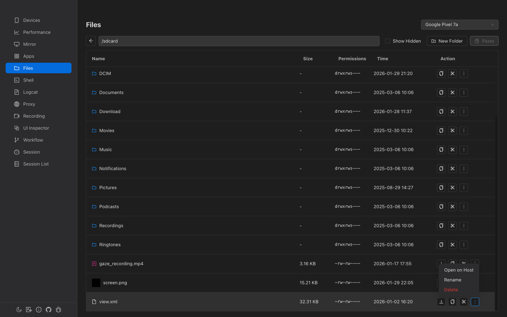

File Manager
Browse, upload, download, copy, move, and delete files on your Android device. Supports drag-and-drop upload with image and video thumbnail previews.

Overview
Browse Directories
Navigate the full device filesystem with back button and direct path input.
Drag-and-Drop Upload
Drop files from your computer directly onto the file list to upload to the device.
File Operations
Copy, cut, paste, rename, delete, and create new folders.
Thumbnail Previews
Image and video files show inline thumbnail previews with hover-to-enlarge.
Navigation
- Back Button — Navigate to the parent directory. Disabled at root.
- Path Input — Shows the current directory path. Type a path and press Enter to navigate directly.
- Double-click folder — Navigate into a directory.
- Double-click file — Open the file on your host computer using the default application.
The default starting path is /sdcard.
Toolbar
| Button | Description |
|---|---|
| Show Hidden | Toggle visibility of files starting with . (dot-files). Client-side filter only. |
| New Folder | Create a new directory at the current path. Opens a dialog for the folder name. |
| Paste | Paste a previously copied or cut file. Shows "Paste (Copy)" or "Paste (Cut)" when clipboard is populated. Turns primary/blue when active. |
File List

The file list uses virtualized rendering for fast performance even with thousands of files.
Columns
| Column | Sortable | Description |
|---|---|---|
| Name | Yes | File/folder name with type icon and optional thumbnail |
| Size | Yes | Human-readable file size (KB/MB). Directories show - |
| Permissions | No | Unix mode string (e.g., drwxr-xr-x) |
| Time | Yes (default) | Last modification time, sorted descending by default |
| Action | No | Per-row action buttons |
Thumbnails
Image files (.jpg, .jpeg, .png, .webp, .gif) and video files (.mp4, .mkv, .mov, .avi) display inline thumbnails. Hover over the name to see a larger preview (up to 400×400px).
File Actions
Each file row has these inline buttons:
| Action | Available For | Description |
|---|---|---|
| Download | Files only | Pull the file from the device to your computer. A save dialog appears. |
| Copy | All | Copy the file/folder path to the internal clipboard. |
| Cut | All | Cut the file/folder path. The file is moved on paste. |
| More (...) | All | Dropdown with: Open on Host, Rename, Delete. |
More Menu
- Open on Host — Pull the file to a temp location and open with your system's default application. A loading indicator with cancel button appears during transfer. Disabled for directories.
- Rename — Opens a dialog pre-filled with the current name (text is pre-selected).
- Delete — Opens a confirmation dialog before permanently deleting.
Drag-and-Drop Upload
Drag files from your computer onto the file list area to upload them to the current directory on the device.
How It Works
- Drag one or more files over the file manager area.
- A blue overlay appears showing "Drop files here to upload" with the target path.
- Drop the files to start uploading.
- A progress overlay shows the current file and progress (e.g., "2/5").
- The file list refreshes automatically after upload completes.
/ (which is read-only on Android), uploads are automatically redirected to /sdcard with a notification.
Upload Results
- All succeed "Successfully uploaded N file(s)"
- Partial "Uploaded X file(s), Y failed"
- All fail "Failed to upload files"